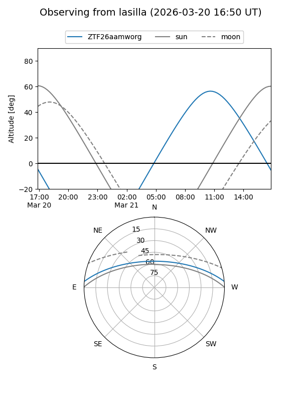
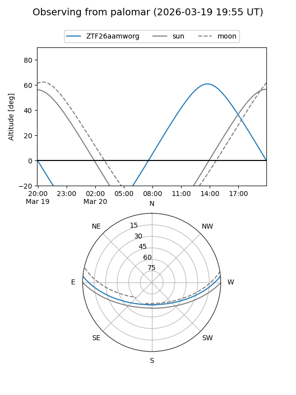

ZTF26aamworg
Target ZTF26aamworg at 2026-03-20 15:51
Aliases and brokers:
FINK: link
Lasair: link
ALeRCE: link
alt names
ZTF26aamworg (ztf,fink_ztf)
Coordinates:
equatorial (ra, dec) = 267.1495,+4.30045
equatorial (HMS+DMS) = 17:48:35.87,+04:18:01.63
galactic (l, b) = (29.5705,+15.93193)
Flags:
Photometry:
last ztfg=19.92
1 ztfg detections
Lightcurve
Visibility


Additional plots